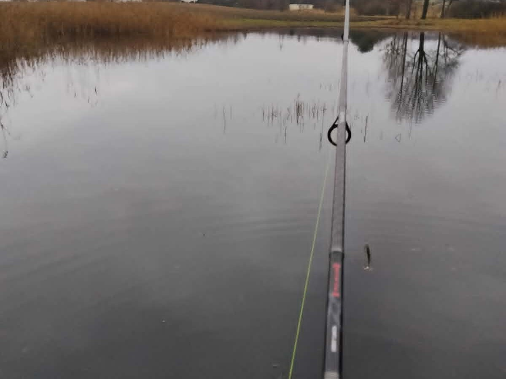

Nurt i cofka: co naprawdę obserwować
Rzeka zmienia się z każdym zakrętem. Szukaj kontrastów: szybszego głównego nurtu, spokojniejszej wody za przeszkodą, cofki przy brzegu, wejścia dopływu oraz przejścia między płytszym przelewem a głębszym dołem. Liście i piana pokazują kierunek powierzchni, ale nie mówią wszystkiego o dnie. Nie stawiaj stopy ani zestawu w miejscu tylko dlatego, że z góry wygląda na spokojne. Pod powierzchnią mogą leżeć kamienie, gałęzie i nagły spadek.
Na początek wybierz czytelny, łagodny brzeg z możliwością obłowienia granicy wolniejszej i szybszej wody. Zamiast rzucać w sam środek nurtu, prowadź przynętę wzdłuż krawędzi cofki lub przy przeszkodzie, zachowując kontrolę nad linką. Jeżeli zestaw natychmiast znosi w nieznaną przeszkodę, skróć dystans albo zmień miejsce. Nie kompensuj ryzyka samym zwiększaniem ciężaru.
Stanowisko przed skutecznością
Przejdź kilka metrów w górę i w dół rzeki, zanim rozłożysz sprzęt. Szukaj stabilnego podłoża, miejsca do bezpiecznego podbierania i drogi odwrotu ponad przewidywany poziom wody. Unikaj podmytych skarp, wysokiej trawy zasłaniającej krawędź, śliskiej gliny i odcinków tuż pod przeszkodami piętrzącymi. Nie łów na zewnętrznym łuku zakrętu, jeśli brzeg jest podcięty albo nie masz gdzie postawić nóg.
Ustaw torbę dalej od wody, a wędkę tak, by żaden przechodzień nie musiał przechodzić przez żyłkę. Nie siadaj tuż przy krawędzi, zwłaszcza gdy grunt pęka. Gdy łowisz z kimś, rozdzielcie sektory rzutów i ustalcie, kto zabezpiecza podbierak. W rzece sprawne stanowisko to takie, które pozwala spokojnie odejść, gdy poziom rośnie.
Brodzenie: decyzja „nie wchodzę” jest poprawna
Brodź tylko wtedy, gdy znasz odcinek, woda jest przejrzysta, przepływ łagodny, a podłoże można sprawdzić kijem lub stopą bez odrywania drugiej nogi. Kamienie porośnięte glonami, ruchomy żwir, nagły dół i zimna woda potrafią przewrócić nawet osobę w dobrych butach. Zapnij pas spodniobutów, nie wchodź sam po zmroku i nie przekraczaj miejsca, w którym prąd wyraźnie napiera na nogi. Wędka nie jest podporą ratunkową.
Jeżeli musisz się wahać, zrezygnuj z wejścia i łów z brzegu. Nie przechodź przez rzekę z plecakiem nad głową, nie próbuj ratować zaczepionej przynęty i nie schodź do wody po telefon. Poślizg w nurcie szybko odbiera możliwość samodzielnego wyjścia, dlatego bezpieczeństwo jest ważniejsze od dostępu do „idealnej” rynny.
Legalny dostęp i zasady konkretnej wody
Po opadach i przy rosnącej wodzie
Przed wyjazdem sprawdź hydrogram i komunikaty IMGW-PIB. Po intensywnym deszczu rzeka może podnieść się, zmętnieć i przyspieszyć daleko od miejsca opadu. Na miejscu zwróć uwagę na świeże ślady wody na trawie, gałęzie niesione nurtem, zawężoną drogę odwrotu i brązową, szybko płynącą wodę. Każdy z tych sygnałów jest powodem, by nie schodzić nisko nad brzeg.
Nie planuj po opadach brodzenia ani wędkowania pod skarpą. Wybierz wyżej położony, stabilny odcinek albo przełóż sesję. Jeśli woda rośnie podczas łowienia, najpierw spakuj najbliższy sprzęt, potem odejdź w stronę wcześniej wybranej drogi. Nie czekaj na „jeszcze jedno branie”.
Prosty zestaw i kontrola dryfu
Na pierwszy raz zabierz jedną wędkę odpowiednią do wybranej metody, podbierak, wypychacz, miarkę i zapas przyponów. Przy spławiku dobierz obciążenie tak, aby spławik był widoczny i nie sunął bez kontroli; przy feederze wybierz koszyczek, który utrzyma punkt bez nadmiernego zarywania dna. Rzut wykonuj poniżej lub w poprzek nurtu zależnie od odcinka, lecz zawsze w zasięgu, z którego odzyskasz zestaw bez schodzenia po skarpie.
Przez pierwszą godzinę zmieniaj tylko jedną rzecz: dystans, punkt rzutu albo ciężar. Zapisz, gdzie zestaw utrzymuje kontakt z dnem i gdzie zaczyna się zaczep. Wiedza o bezpiecznym pasie jest wartościowsza niż przypadkowy rzut pod drugi brzeg.
FAQ: pierwsza rzeka
Czy cofka zawsze oznacza ryby?
Nie zawsze, ale jest czytelnym miejscem do obserwacji. Sprawdź, czy da się ją obłowić bez stania nad podmytym brzegiem.
Czy po deszczu można brodzić?
Nie zakładaj tego. Przy wzroście wody lub silniejszym nurcie zrezygnuj z wejścia i wybierz brzeg albo inną datę.
Co zrobić, gdy nurt porwał zestaw?
Nie biegnij za nim i nie wchodź do wody. Odetnij linkę, gdy nie można odzyskać jej bezpiecznie.
Notatka po sesji: obserwacja zamiast obietnicy
Źródła i mapy przed wyjazdem
- IMGW-PIB Hydro — aktualne stany i prognozy hydrologiczne.
- Państwowe Gospodarstwo Wodne Wody Polskie — zarządzanie wodami i komunikaty.
- ISAP: ustawa o rybactwie śródlądowym — podstawa prawna połowu.
- Geoportal GDOŚ — sprawdzenie form ochrony przyrody.
Zasady wspólne dla każdego typu wody — dojście, ocena ryzyka i pakowanie — zebraliśmy w przewodniku po wyborze pierwszego łowiska.